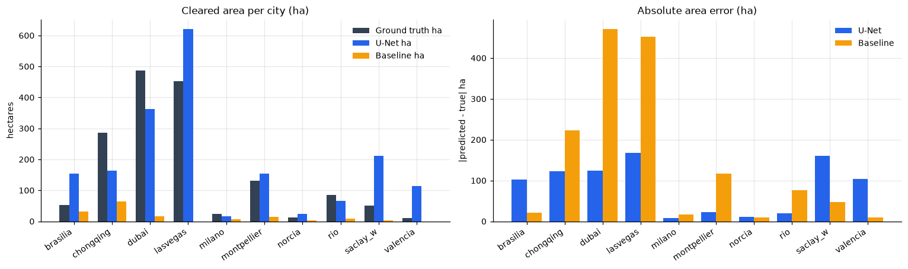
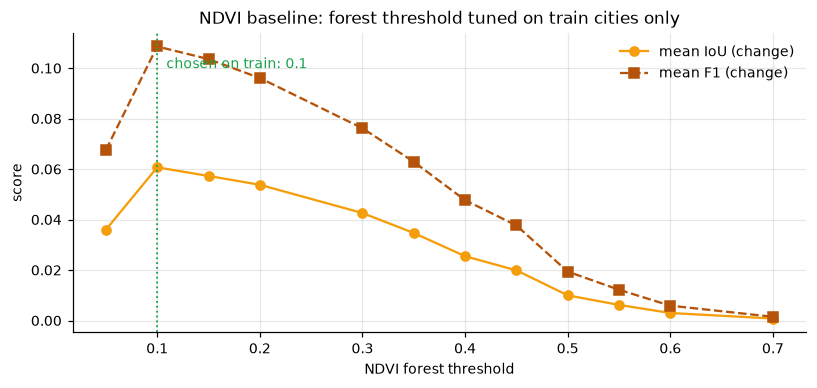
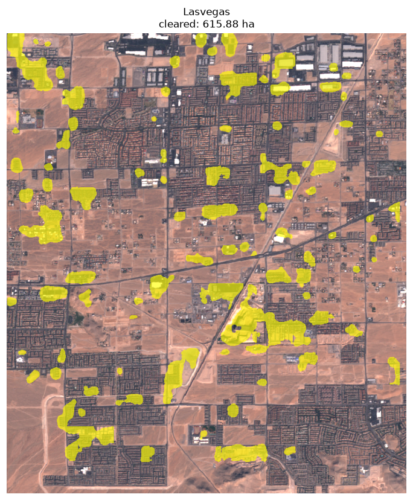
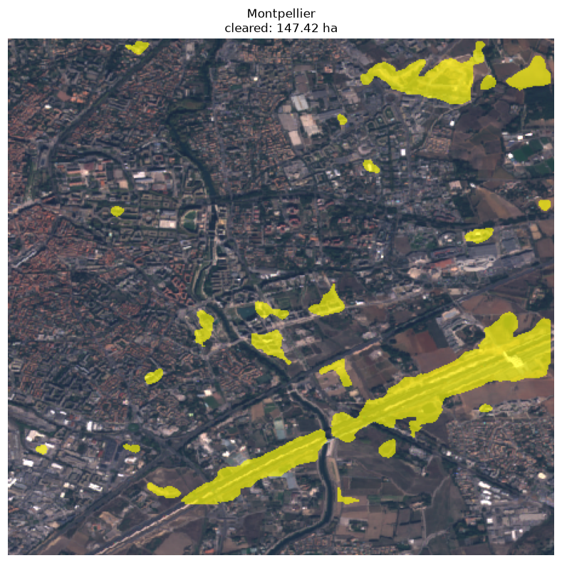
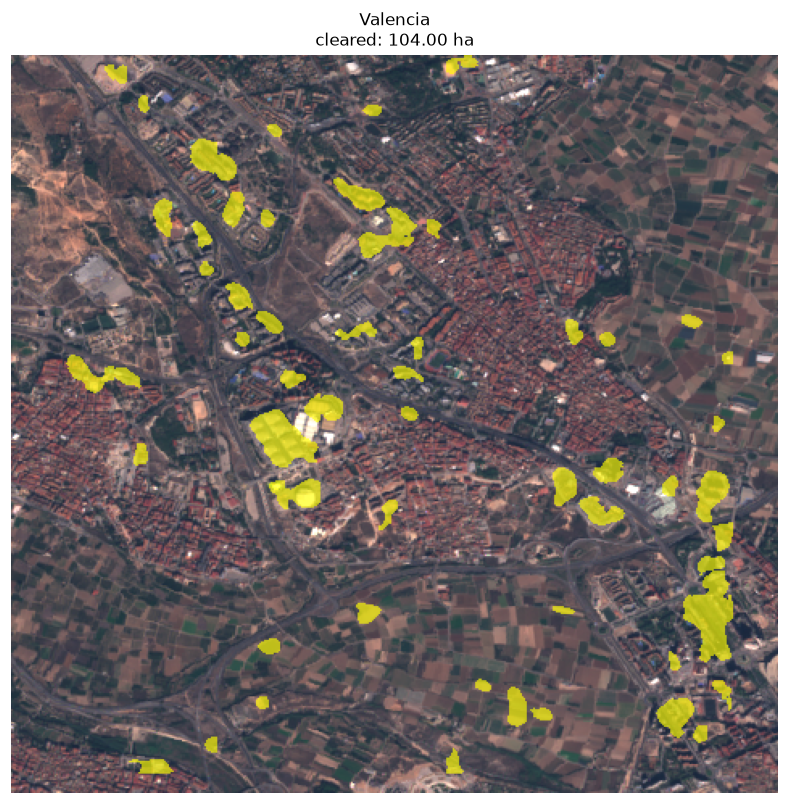
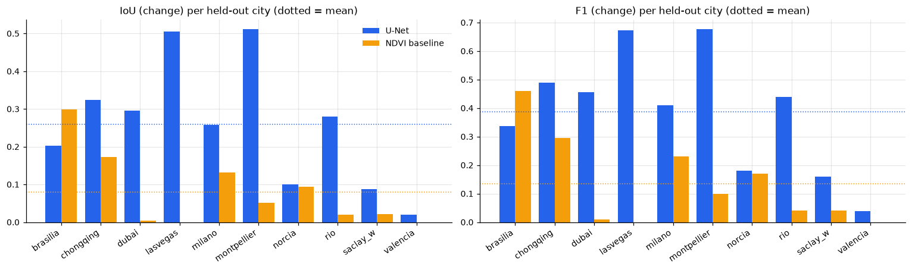
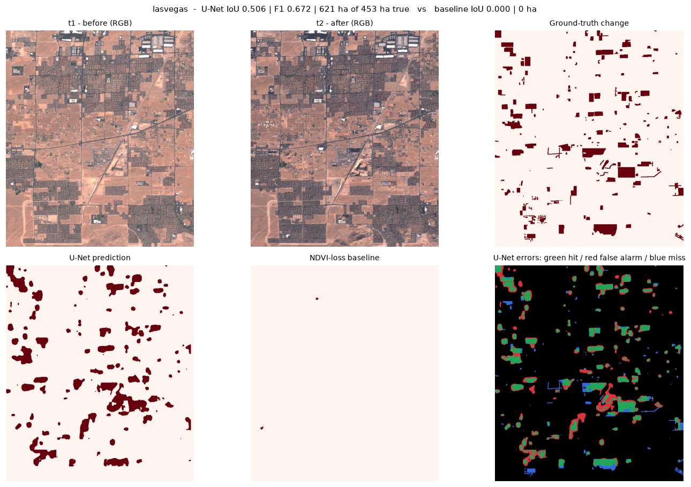
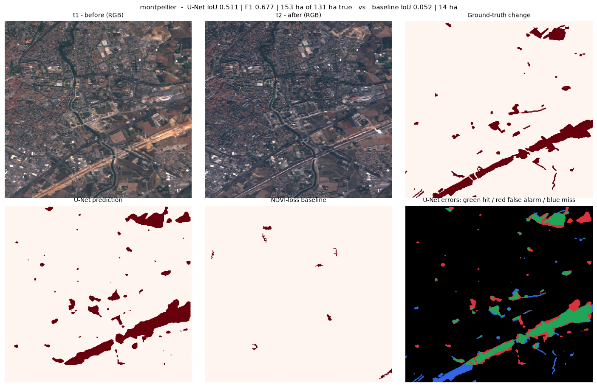
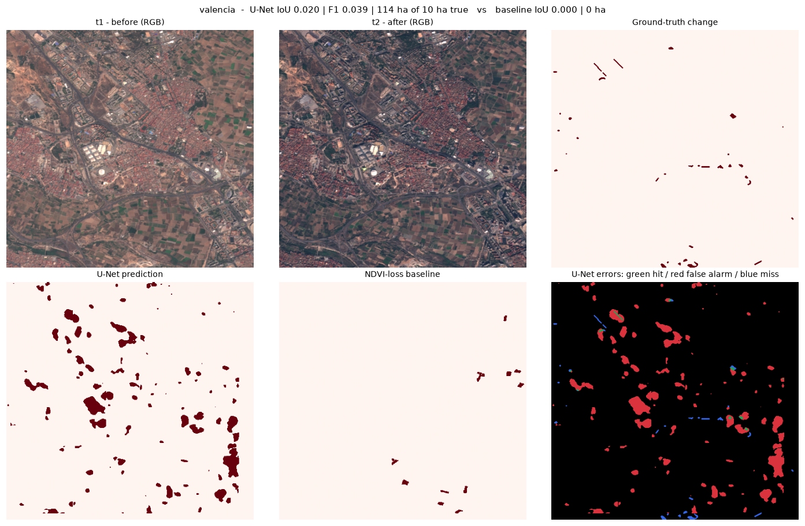
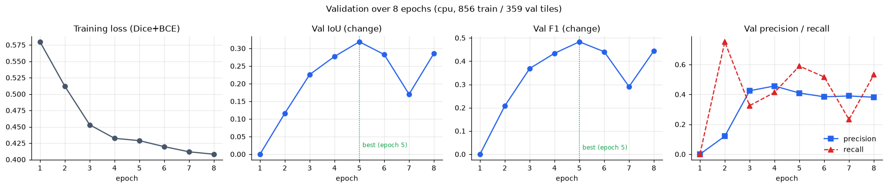

Applied ML portfolio - results console
A lightweight U-Net on 12-band Sentinel-2 scene pairs, trained on 856 tiles from 14 labelled cities and reported once on the 10 held-out test cities. Changed pixels are 1-5% of a scene, so every headline here is a change-class score, never a mean over classes.
Two models, one test split, nothing tuned on it. The U-Net is trained only on the 14 labelled OSCD train cities, with 4 of them held back for early stopping; the 10 test cities are scored exactly once. The baseline is a hand-tuned NDVI rule, frozen on the train cities and evaluated here unchanged.
U-Net IoU (change)mean over the held-out cities
0.2586
U-Net F1 (change)precision 0.3928, recall 0.4642
0.3862
U-Net mean IoUboth classes, change and no-change
0.6022
Margin over baselinechange-class F1: 0.1345 for the baseline
+25.2 pts
| Metric | U-Net (mobilenet_v2, 24 ch, 8 epochs) | NDVI-loss baseline |
|---|---|---|
| IoU (change class) | 0.2586 | 0.0793 |
| F1 (change class) | 0.3862 | 0.1345 |
| Precision (change class) | 0.3928 | 0.3827 |
| Recall (change class) | 0.4642 | 0.0900 |
| Mean IoU (both classes) | 0.6022 | 0.5182 |
| IoU (no-change class) | 0.9458 | 0.9571 |
| Epoch | Loss | IoU (change) | IoU (no-change) | Mean IoU | F1 (change) | Precision | Recall |
|---|---|---|---|---|---|---|---|
| 1 | 0.5798 | 0.0000 | 0.9769 | 0.4885 | 0.0000 | 0.0000 | 0.0000 |
| 2 | 0.5120 | 0.1159 | 0.8652 | 0.4906 | 0.2077 | 0.1205 | 0.7522 |
| 3 | 0.4531 | 0.2258 | 0.9741 | 0.5999 | 0.3684 | 0.4247 | 0.3252 |
| 4 | 0.4324 | 0.2771 | 0.9749 | 0.6260 | 0.4339 | 0.4565 | 0.4134 |
| 5 | 0.4289 | 0.3187 | 0.9705 | 0.6446 | 0.4834 | 0.4095 | 0.5898 |
| 6 | 0.4197 | 0.2827 | 0.9694 | 0.6260 | 0.4408 | 0.3842 | 0.5169 |
| 7 | 0.4118 | 0.1701 | 0.9738 | 0.5719 | 0.2907 | 0.3898 | 0.2318 |
| 8 | 0.4081 | 0.2857 | 0.9689 | 0.6273 | 0.4445 | 0.3813 | 0.5327 |
| City (held out) | U-Net F1 | F1 | Baseline IoU | Baseline F1 | True cleared | U-Net cleared | Baseline cleared | U-Net area error |
|---|---|---|---|---|---|---|---|---|
| montpellier | 0.6767 | 0.0519 | 0.0986 | 130.5 ha | 153.2 ha | 13.7 ha | 22.6 ha | |
| lasvegas | 0.6717 | 0.0000 | 0.0000 | 452.7 ha | 620.7 ha | 0.0 ha | 168.0 ha | |
| chongqing | 0.4895 | 0.1728 | 0.2947 | 286.4 ha | 163.2 ha | 63.3 ha | 123.2 ha | |
| dubai | 0.4566 | 0.0043 | 0.0086 | 486.9 ha | 362.7 ha | 15.9 ha | 124.2 ha | |
| rio | 0.4383 | 0.0205 | 0.0402 | 85.5 ha | 65.6 ha | 9.1 ha | 19.9 ha | |
| milano | 0.4107 | 0.1310 | 0.2316 | 24.2 ha | 15.6 ha | 6.9 ha | 8.6 ha | |
| brasilia | 0.3372 | 0.2986 | 0.4598 | 52.4 ha | 154.6 ha | 31.7 ha | 102.2 ha | |
| norcia | 0.1814 | 0.0935 | 0.1710 | 12.3 ha | 23.9 ha | 2.1 ha | 11.6 ha | |
| saclay_w | 0.1605 | 0.0206 | 0.0403 | 50.2 ha | 211.4 ha | 2.4 ha | 161.2 ha | |
| valencia | 0.0392 | 0.0000 | 0.0000 | 9.7 ha | 114.2 ha | 0.0 ha | 104.5 ha |
Rendered straight from the committed artefacts, so each map below is the prediction the metrics above were computed from, not a re-run.
Generated by python -m forest_change.figures and committed to the repository, so they render on GitHub Pages with no build step and no network request. Maps are full-city inference, not tiles: every test scene is predicted as one image at 10 m resolution.










Changed pixels are 1–5% of a scene, so a model that labels every pixel no-change scores 0.4729 mean IoU here while finding exactly zero cleared forest (the no-change class alone is 94.58% of the pixels). Every honest metric here is therefore reported for the change class, with the no-change IoU shown only as context.
lasvegas and dubai sit in bare desert. Almost every non-urban pixel there resembles cleared ground, so the model over-predicts area on them and under-predicts on the small, subtle cities — see the area accounting above, where the two failure directions are visible per city.
valencia reaches 0.0392 change-class F1 against 9.7 ha of true loss and 114.2 ha predicted. One city in ten is effectively undetected, and the mean above hides it.
montpellier reaches 0.6767 F1. The spread between the best and worst held-out city is the real result, not the average of the two.
Training ran 8 epochs on CPU on 856 tiles from 14 labelled OSCD cities, with 4 further cities held out for early stopping. The test cities were never used for training, validation or threshold tuning. Nothing was ensembled, no pretrained change-detection weights were fine-tuned, and the NDVI threshold was frozen before the test evaluation. The checkpoint reported is the best-validation one, not the last epoch.
{
"baseline": {
"forest_threshold": 0.1,
"model": "NDVI-loss baseline",
"rule": "cleared = NDVI(t1) > 0.1 AND NDVI(t2) <= 0.1, speckle filter >= 50 px",
"test": {
"mean": {
"f1_change": 0.1345,
"iou_change": 0.0793
},
"per_city": {
"brasilia": {
"abs_ha_error": 20.68,
"city": "brasilia",
"f1_change": 0.4598,
"iou_change": 0.2986,
"iou_no_change": 0.9774,
"mean_iou": 0.638,
"precision_change": 0.6096,
"pred_ha": 31.74,
"recall_change": 0.3691,
"tile_detect_f1": 0.7079,
"tile_detect_precision": 0.84,
"tile_detect_recall": 0.6117,
"true_ha": 52.42
},
"chongqing": {
"abs_ha_error": 223.07,
"city": "chongqing",
"f1_change": 0.2947,
"iou_change": 0.1728,
"iou_no_change": 0.9371,
"mean_iou": 0.5549,
"precision_change": 0.8139,
"pred_ha": 63.3,
"recall_change": 0.1799,
"tile_detect_f1": 0.7118,
"tile_detect_precision": 0.9576,
"tile_detect_recall": 0.5664,
"true_ha": 286.37
},
"dubai": {
"abs_ha_error": 470.95,
"city": "dubai",
"f1_change": 0.0086,
"iou_change": 0.0043,
"iou_no_change": 0.8984,
"mean_iou": 0.4514,
"precision_change": 0.1361,
"pred_ha": 15.94,
"recall_change": 0.0045,
"tile_detect_f1": 0.4364,
"tile_detect_precision": 1.0,
"tile_detect_recall": 0.2791,
"true_ha": 486.89
},
"lasvegas": {
"abs_ha_error": 452.7,
"city": "lasvegas",
"f1_change": 0.0,
"iou_change": 0.0,
"iou_no_change": 0.9233,
"mean_iou": 0.4616,
"precision_change": 0.0,
"pred_ha": 0.0,
"recall_change": 0.0,
"tile_detect_f1": 0.0,
"tile_detect_precision": 0.0,
"tile_detect_recall": 0.0,
"true_ha": 452.7
},
"milano": {
"abs_ha_error": 17.29,
"city": "milano",
"f1_change": 0.2316,
"iou_change": 0.131,
"iou_no_change": 0.9921,
"mean_iou": 0.5615,
"precision_change": 0.5217,
"pred_ha": 6.9,
"recall_change": 0.1488,
"tile_detect_f1": 0.4238,
"tile_detect_precision": 0.8769,
"tile_detect_recall": 0.2794,
"true_ha": 24.19
},
"montpellier": {
"abs_ha_error": 116.89,
"city": "montpellier",
"f1_change": 0.0986,
"iou_change": 0.0519,
"iou_no_change": 0.9321,
"mean_iou": 0.492,
"precision_change": 0.5209,
"pred_ha": 13.65,
"recall_change": 0.0545,
"tile_detect_f1": 0.4439,
"tile_detect_precision": 0.8532,
"tile_detect_recall": 0.3,
"true_ha": 130.54
},
"norcia": {
"abs_ha_error": 10.15,
"city": "norcia",
"f1_change": 0.171,
"iou_change": 0.0935,
"iou_no_change": 0.9871,
"mean_iou": 0.5403,
"precision_change": 0.5802,
"pred_ha": 2.12,
"recall_change": 0.1002,
"tile_detect_f1": 0.3059,
"tile_detect_precision": 0.8125,
"tile_detect_recall": 0.1884,
"true_ha": 12.27
},
"rio": {
"abs_ha_error": 76.47,
"city": "rio",
"f1_change": 0.0402,
"iou_change": 0.0205,
"iou_no_change": 0.9396,
"mean_iou": 0.48,
"precision_change": 0.2099,
"pred_ha": 9.05,
"recall_change": 0.0222,
"tile_detect_f1": 0.4764,
"tile_detect_precision": 0.9712,
"tile_detect_recall": 0.3156,
"true_ha": 85.52
},
"saclay_w": {
"abs_ha_error": 47.74,
"city": "saclay_w",
"f1_change": 0.0403,
"iou_change": 0.0206,
"iou_no_change": 0.9885,
"mean_iou": 0.5045,
"precision_change": 0.4344,
"pred_ha": 2.44,
"recall_change": 0.0211,
"tile_detect_f1": 0.0922,
"tile_detect_precision": 0.3571,
"tile_detect_recall": 0.0529,
"true_ha": 50.18
},
"valencia": {
"abs_ha_error": 9.69,
"city": "valencia",
"f1_change": 0.0,
"iou_change": 0.0,
"iou_no_change": 0.9956,
"mean_iou": 0.4978,
"precision_change": 0.0,
"pred_ha": 0.0,
"recall_change": 0.0,
"tile_detect_f1": 0.0,
"tile_detect_precision": 0.0,
"tile_detect_recall": 0.0,
"true_ha": 9.69
}
}
},
"test_cities": [
"brasilia",
"montpellier",
"norcia",
"rio",
"saclay_w",
"valencia",
"dubai",
"lasvegas",
"milano",
"chongqing"
],
"threshold_grid": [
0.05,
0.1,
0.15,
0.2,
0.3,
0.35,
0.4,
0.45,
0.5,
0.55,
0.6,
0.7
],
"train_cities": [
"aguasclaras",
"bercy",
"bordeaux",
"nantes",
"paris",
"rennes",
"saclay_e",
"abudhabi",
"cupertino",
"pisa",
"beihai",
"hongkong",
"beirut",
"mumbai"
],
"tuning": [
{
"f1_change": 0.0676,
"iou_change": 0.036,
"threshold": 0.05
},
{
"f1_change": 0.1086,
"iou_change": 0.0607,
"threshold": 0.1
},
{
"f1_change": 0.1036,
"iou_change": 0.0573,
"threshold": 0.15
},
{
"f1_change": 0.0961,
"iou_change": 0.0538,
"threshold": 0.2
},
{
"f1_change": 0.0762,
"iou_change": 0.0426,
"threshold": 0.3
},
{
"f1_change": 0.0629,
"iou_change": 0.0347,
"threshold": 0.35
},
{
"f1_change": 0.0477,
"iou_change": 0.0255,
"threshold": 0.4
},
{
"f1_change": 0.0377,
"iou_change": 0.0199,
"threshold": 0.45
},
{
"f1_change": 0.0194,
"iou_change": 0.01,
"threshold": 0.5
},
{
"f1_change": 0.0122,
"iou_change": 0.0062,
"threshold": 0.55
},
{
"f1_change": 0.0059,
"iou_change": 0.003,
"threshold": 0.6
},
{
"f1_change": 0.0015,
"iou_change": 0.0008,
"threshold": 0.7
}
]
},
"unet": {
"minutes": 108.5,
"run": {
"best_val_iou_change": 0.3187,
"device": "cpu",
"epochs": 8,
"history": [
{
"epoch": 1,
"f1_change": 0.0,
"iou_change": 0.0,
"iou_no_change": 0.9769,
"loss": 0.5798,
"mean_iou": 0.4885,
"precision_change": 0.0,
"recall_change": 0.0
},
{
"epoch": 2,
"f1_change": 0.2077,
"iou_change": 0.1159,
"iou_no_change": 0.8652,
"loss": 0.512,
"mean_iou": 0.4906,
"precision_change": 0.1205,
"recall_change": 0.7522
},
{
"epoch": 3,
"f1_change": 0.3684,
"iou_change": 0.2258,
"iou_no_change": 0.9741,
"loss": 0.4531,
"mean_iou": 0.5999,
"precision_change": 0.4247,
"recall_change": 0.3252
},
{
"epoch": 4,
"f1_change": 0.4339,
"iou_change": 0.2771,
"iou_no_change": 0.9749,
"loss": 0.4324,
"mean_iou": 0.626,
"precision_change": 0.4565,
"recall_change": 0.4134
},
{
"epoch": 5,
"f1_change": 0.4834,
"iou_change": 0.3187,
"iou_no_change": 0.9705,
"loss": 0.4289,
"mean_iou": 0.6446,
"precision_change": 0.4095,
"recall_change": 0.5898
},
{
"epoch": 6,
"f1_change": 0.4408,
"iou_change": 0.2827,
"iou_no_change": 0.9694,
"loss": 0.4197,
"mean_iou": 0.626,
"precision_change": 0.3842,
"recall_change": 0.5169
},
{
"epoch": 7,
"f1_change": 0.2907,
"iou_change": 0.1701,
"iou_no_change": 0.9738,
"loss": 0.4118,
"mean_iou": 0.5719,
"precision_change": 0.3898,
"recall_change": 0.2318
},
{
"epoch": 8,
"f1_change": 0.4445,
"iou_change": 0.2857,
"iou_no_change": 0.9689,
"loss": 0.4081,
"mean_iou": 0.6273,
"precision_change": 0.3813,
"recall_change": 0.5327
}
],
"n_train_tiles": 856,
"n_val_tiles": 359,
"test_cities": [
"brasilia",
"montpellier",
"norcia",
"rio",
"saclay_w",
"valencia",
"dubai",
"lasvegas",
"milano",
"chongqing"
],
"train_cities": [
"aguasclaras",
"bercy",
"bordeaux",
"nantes",
"paris",
"rennes",
"saclay_e",
"abudhabi",
"cupertino",
"pisa",
"beihai",
"hongkong",
"beirut",
"mumbai"
],
"val_cities": [
"bercy",
"nantes",
"rennes",
"beirut"
]
},
"test": {
"per_city": {
"brasilia": {
"abs_ha_error": 102.18,
"f1_change": 0.3372,
"iou_change": 0.2028,
"iou_no_change": 0.9312,
"mean_iou": 0.567,
"precision_change": 0.2257,
"pred_ha": 154.6,
"recall_change": 0.6658,
"true_ha": 52.42
},
"chongqing": {
"abs_ha_error": 123.16,
"f1_change": 0.4895,
"iou_change": 0.324,
"iou_no_change": 0.9406,
"mean_iou": 0.6323,
"precision_change": 0.6742,
"pred_ha": 163.21,
"recall_change": 0.3842,
"true_ha": 286.37
},
"dubai": {
"abs_ha_error": 124.2,
"f1_change": 0.4566,
"iou_change": 0.2959,
"iou_no_change": 0.9021,
"mean_iou": 0.599,
"precision_change": 0.5348,
"pred_ha": 362.69,
"recall_change": 0.3984,
"true_ha": 486.89
},
"lasvegas": {
"abs_ha_error": 167.99,
"f1_change": 0.6717,
"iou_change": 0.5057,
"iou_no_change": 0.9364,
"mean_iou": 0.7211,
"precision_change": 0.5808,
"pred_ha": 620.69,
"recall_change": 0.7964,
"true_ha": 452.7
},
"milano": {
"abs_ha_error": 8.55,
"f1_change": 0.4107,
"iou_change": 0.2585,
"iou_no_change": 0.9923,
"mean_iou": 0.6254,
"precision_change": 0.523,
"pred_ha": 15.64,
"recall_change": 0.3382,
"true_ha": 24.19
},
"montpellier": {
"abs_ha_error": 22.63,
"f1_change": 0.6767,
"iou_change": 0.5114,
"iou_no_change": 0.9498,
"mean_iou": 0.7306,
"precision_change": 0.6268,
"pred_ha": 153.17,
"recall_change": 0.7354,
"true_ha": 130.54
},
"norcia": {
"abs_ha_error": 11.62,
"f1_change": 0.1814,
"iou_change": 0.0998,
"iou_no_change": 0.968,
"mean_iou": 0.5339,
"precision_change": 0.1373,
"pred_ha": 23.89,
"recall_change": 0.2673,
"true_ha": 12.27
},
"rio": {
"abs_ha_error": 19.95,
"f1_change": 0.4383,
"iou_change": 0.2806,
"iou_no_change": 0.9423,
"mean_iou": 0.6115,
"precision_change": 0.505,
"pred_ha": 65.57,
"recall_change": 0.3872,
"true_ha": 85.52
},
"saclay_w": {
"abs_ha_error": 161.18,
"f1_change": 0.1605,
"iou_change": 0.0873,
"iou_no_change": 0.9498,
"mean_iou": 0.5185,
"precision_change": 0.0993,
"pred_ha": 211.36,
"recall_change": 0.4183,
"true_ha": 50.18
},
"valencia": {
"abs_ha_error": 104.5,
"f1_change": 0.0392,
"iou_change": 0.02,
"iou_no_change": 0.9453,
"mean_iou": 0.4827,
"precision_change": 0.0213,
"pred_ha": 114.19,
"recall_change": 0.2508,
"true_ha": 9.69
}
}
}
}
}